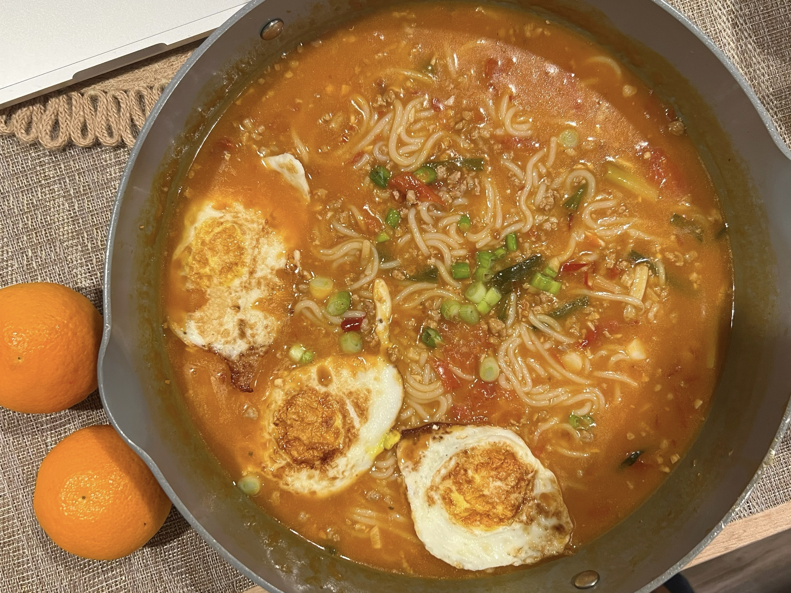

Recipes
Delve into the vibrant tastes of Eastern culinary traditions with our assortment of authentic Asian dishes, crafted in your own kitchen. Share and savor these creations with loved ones!
Zucchini Fritters

Ingredients:
- Zucchini
- Eggs
- Vegetable/seed oil
- Garlic
- Salt and pepper
- Flour
Instructions
- Combine eggs, salt, and pepper and whisk
- Add pressed garlic
- Grate the zucchini and squeeze the moisture out of it
- Add zucchini and flour and mix
- Heat oil in pan and add dollops of batter
- Serve with or without dipping sauce
Coca-Cola Chicken Wings

Ingredients:
- Chicken wings
- Scallions
- Ginger slices
- Cooking wine
- Dark soy sauce
- A can of coke
Instructions
- Wash and place chicken wings in a bowl
- Add scallions, ginger slices, cooking wine, dark soy sauce and salt to the washed chicken wings, and mix them well
- Cover the bowl with plastic wrap and marinate the chicken wings for 1 hour
- Put the right amount of oil in the pot, and put the marinated chicken wings into the pot and fry it until golden brown on both sides
- After fry the chicken wings until golden brown on both sides, then pour a can of coke into the pan and bring to a boil
- Continue to cook for an additional 2-3 minutes until the glaze has thickened and coats the wings nicely
- Transfer the Coca-Cola glazed chicken wings to a serving platterb
🍜 Tomato Ground Pork Rice Noodle
Ingredients:
- Tomatoes🍅
- Ground Pork
- Rice noodle
- Pixian bean paste
- Eggs🥚 and green onions
Instructions
- Heat oil in a pan and cook the ground pork until it just starts to change color. Then add Pixian bean paste to flavor.
- Add minced ginger, minced garlic, and chopped tomatoes, and stir-fry until the tomatoes release their juice. Season with two spoons of light soy sauce and one spoon of oyster sauce.
- Add boiling water to the mixture.
- Put in the pre-cooked rice noodles and let them soak up the flavors.
- Serve and enjoy your meal!